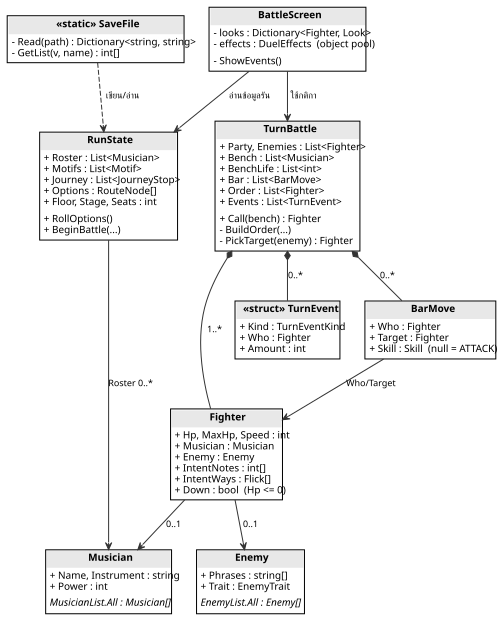
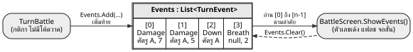
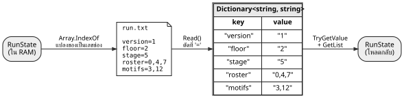
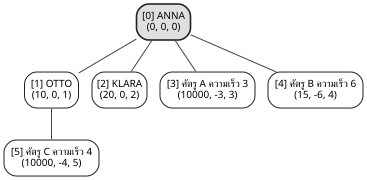
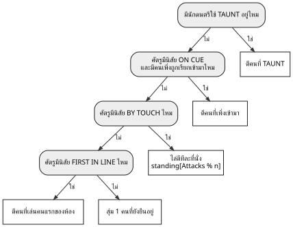
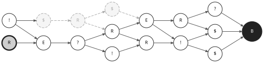

TACET 4'33 เป็นเกมแนว roguelike ที่ผู้เล่นรับบทวาทยากร (conductor) คุมวงนักดนตรีออกไปสู้กับ TACET หรือ "ความเงียบ" ผู้เล่นใช้เมาส์แทนไม้บาตอง รายงานนี้อ้างอิงเกมเวอร์ชัน Alpha7 ซึ่งเปลี่ยนการต่อสู้จากเกมจังหวะมาเป็นแบบผลัดกันเล่น (turn-based)
การต่อสู้แบ่งเป็นรอบ เกมเรียกหนึ่งรอบว่า 1 ห้อง (bar) ในแต่ละห้องผู้เล่นเลือกท่าให้นักดนตรีบนเวทีคนละ 1 ท่า เช่น ATTACK หรือสกิล แล้วกด ENTER ให้ทั้งวงเล่นตามลำดับที่เรียงไว้ ศัตรูจะแทรกเข้ามาเล่นตามความเร็วของมัน ตอนใช้สกิล ผู้เล่นต้องตวัดเมาส์ตามทิศของโน้ตให้ทันตอนวงแหวนบีบเข้ามา (QTE) และตอนศัตรูตีก็ตวัดสวนเพื่อปัดป้องได้
นอกการต่อสู้ ผู้เล่นเดินไปตามเส้นทางทีละขั้น ผ่านห้องต่อสู้ เหตุการณ์ ร้านค้า และจุดพัก จนถึงบอสของแต่ละชั้น ข้อมูลของรันทั้งหมดเซฟเป็นไฟล์ข้อความ ปิดเกมแล้วกลับมาเล่นต่อได้
เกมเขียนด้วยภาษา C# บน MonoGame (DesktopGL 3.8, .NET 9) โค้ดแบ่งเป็น 4 โฟลเดอร์หลัก คือ Data (ข้อมูลของเกม) Battle (กติกาการต่อสู้) Screens (หน้าจอแต่ละหน้า) และ Core (เครื่องมือกลาง เช่น การวาด การอ่านเมาส์)
ตารางที่ 1-1 สรุปโครงสร้างข้อมูลที่อธิบายในรายงาน เรียงตามหัวข้อที่เรียน ช่องสถานะบอกว่าอยู่ในเกมแล้ว หรือเป็นแผนที่ทีมจะนำไปใช้
| หัวข้อ | โครงสร้างข้อมูล | ใช้ที่ไหน | สถานะ | ข้อ |
|---|---|---|---|---|
| Arrays and Sorting | Array แบบตารางข้อมูล | รายชื่อนักดนตรี ศัตรู Motif | ใช้จริง | 2.1 |
| Array ขนาดคงที่ (object pool) | ตัวเลขเด้ง ประกายไฟ | ใช้จริง | 2.2 | |
| Insertion sort, Array.Sort | ลำดับเทิร์น, การวัดจังหวะมือ | ใช้จริง | 2.3 | |
| Variants of Lists | List<T> (dynamic array) | คนในสนาม ศัตรู ม้านั่ง | ใช้จริง | 3.1 |
| List ใช้เป็นคิวเหตุการณ์ | ส่งผลการต่อสู้ให้หน้าจอ | ใช้จริง | 3.2 | |
| Key-Value Pair | Dictionary<string, string> | อ่านไฟล์เซฟ | ใช้จริง | 4.1 |
| Dictionary<Fighter, Look> | สถานะภาพของตัวละคร | ใช้จริง | 4.2 | |
| Array ที่ใช้ตัวเลขเป็น key | ข้อความตัวเลขที่เตรียมไว้ | ใช้จริง | 4.3 | |
| Variants of Trees | Heap (PriorityQueue) | ลำดับเทิร์น | แผน | 5.1 |
| Decision tree | ศัตรูเลือกเป้าหมาย | แผน | 5.2 | |
| Exploring Graphs | DAG, adjacency list, BFS | แผนที่เส้นทาง | แผน | 6.2, 6.3 |
รูปที่ 1-1 แสดงคลาสหลักและ field ที่เป็นโครงสร้างข้อมูล (ตัดส่วนที่ไม่เกี่ยวข้องออก) RunState เก็บทุกอย่างของการเล่นหนึ่งรัน TurnBattle เก็บสถานะของการต่อสู้หนึ่งครั้งและไม่มีโค้ดวาดภาพเลย ส่วน BattleScreen อ่านข้อมูลจาก TurnBattle แล้ววาดออกจอ การแยกกติกากับหน้าจอแบบนี้มีผลต่อการเลือกโครงสร้างข้อมูลหลายจุด ซึ่งจะเห็นในบทที่ 3 และ 4

ข้อมูลที่ไม่เปลี่ยนระหว่างเล่น เช่น นักดนตรี (9 รายการ) ศัตรูรวมบอส (18 รายการ) และ Motif (28 รายการ) เก็บเป็น array แบบ static ที่เขียนไว้ในโค้ดครั้งเดียว เหตุผลที่เลือก array คือจำนวนคงที่ เรียงตามลำดับที่ออกแบบไว้ และหยิบตัวไหนก็ได้ทันทีด้วย index ในเวลา O(1)
public static class MusicianList
{
public static Musician[] All = new Musician[]
{
//Era 0 : CLASSICAL
new Musician { Name = "ANNA", Instrument = "VIOLIN", ... },
new Musician { Name = "KLARA", Instrument = "FLUTE", ... },
// ... อีก 7 คน
};
}
ลำดับใน array ยังมีหน้าที่เพิ่ม เพราะไฟล์เซฟไม่ได้เก็บข้อมูลนักดนตรีทั้งก้อน แต่เก็บแค่เลขช่อง (index) ของคนที่อยู่ในวง ตอนเซฟใช้ Array.IndexOf หาเลขช่อง ตอนโหลดก็หยิบจากช่องนั้นกลับมา (รูปที่ 2-1)
// เซฟ : นักดนตรีแต่ละคนในวง กลายเป็นเลขช่องใน MusicianList.All
for (int i = 0; i < run.Roster.Count; i++)
roster.Add(Array.IndexOf(MusicianList.All, run.Roster[i]).ToString());
// โหลด : เลขช่องกลับเป็นตัวนักดนตรี (ตรวจขอบเขตก่อน กันไฟล์เสีย)
if (roster[i] >= 0 && roster[i] < MusicianList.All.Length)
run.Roster.Add(MusicianList.All[roster[i]]);
ข้อดีและข้อควรระวัง ไฟล์เซฟเล็กและอ่านง่าย แต่มีกฎตามมา คือห้ามสลับหรือแทรกรายการกลาง array เพราะเซฟเก่าจะชี้ไปผิดคน ทีมจึงเขียนกฎนี้ไว้ในเอกสารของโปรเจกต์ ของใหม่ต้องต่อท้ายเท่านั้น ส่วน Array.IndexOf เป็นการค้นหาแบบไล่ทีละช่อง (linear search) ใช้เวลา O(n) แต่ n มีแค่ 9 ถึง 28 และเรียกตอนเซฟเท่านั้น จึงไม่กระทบความเร็วของเกม
อีกรูปแบบที่ใช้บ่อยคือ array หลายตัวที่เรียงตาม enum เดียวกัน (parallel arrays) เช่น RouteNodeInfo.Titles[(int)NodeType.Shop] คืนคำว่า SHOP และ RouteNodeInfo.Marks ช่องเดียวกันคืนตัวอักษร $ ข้อมูลของสถานที่แต่ละชนิดจึงแก้ได้ในไฟล์เดียว
ตัวเลขดาเมจที่เด้งขึ้นมา ประกายไฟ และเศษแสง เกิดขึ้นและหายไปหลายสิบครั้งต่อวินาที ถ้าสร้างด้วย new ทุกครั้งแล้วทิ้ง หน่วยความจำจะมีขยะสะสม และ garbage collector ของ C# อาจหยุดเกมสั้นๆ เพื่อเก็บขยะ ทำให้ภาพกระตุก
เกมแก้ด้วย object pool คือสร้างของไว้ล่วงหน้าใน array ขนาดคงที่ตั้งแต่เริ่ม (ตัวเลขเด้ง 20 ช่อง ประกายไฟ 60 ช่อง) แต่ละช่องมีธง On บอกว่ากำลังใช้อยู่ไหม ตอนต้องการก็ไล่หาช่องแรกที่ว่าง ตอนหมดอายุ (Life <= 0) ก็ตั้ง On = false ให้ช่องนั้นกลับมาว่าง ระหว่างเล่นจึงไม่มีการ new เลย
private Pop[] pops = new Pop[20]; // สร้างครบ 20 ตัวใน constructor
//Pop Spawn : text should come from NumberText or a fixed word, never built on the spot
public void SpawnPop(float x, float y, string text, Color color, float scale)
{
for (int i = 0; i < pops.Length; i++)
{
if (pops[i].On) continue; // ช่องนี้ใช้อยู่ ข้ามไป
pops[i].On = true;
pops[i].X = x;
pops[i].Y = y;
pops[i].Life = PopLife;
pops[i].Text = text;
// ...
return;
}
}
การวิเคราะห์ การหาช่องว่างแบบไล่จากหน้าใช้เวลา O(n) ต่อครั้ง แต่ n เป็นแค่ 20 ถึง 60 ถ้าช่องเต็มหมด ของชิ้นใหม่จะไม่แสดง (ไม่ error) ซึ่งยอมรับได้สำหรับเอฟเฟกต์ ถ้าวันหนึ่ง pool ใหญ่มาก วิธีที่เร็วกว่าคือเก็บเลขช่องว่างไว้ใน stack (free list) จะได้ช่องว่างใน O(1)
ในหนึ่งห้อง วงจะเล่นตามลำดับที่ผู้เล่นเรียง ส่วนศัตรูแบ่งเป็น 3 กลุ่มตามกติกา ศัตรูที่เร็วตั้งแต่ 5 ขึ้นไปแทรกเข้ามาหลังท่าที่ 2 ของวง (CUT IN) ศัตรูนิสัย TWICE A BAR แทรก 2 ครั้งหลังท่าที่ 1 และท่าที่ 3 ที่เหลือเล่นหลังวง ในกลุ่มเดียวกันตัวที่เร็วกว่าเล่นก่อน และถ้าเร็วเท่ากันต้องเล่นตามลำดับที่ยืนในสนาม ผู้เล่นจะได้คาดเดาลำดับได้
เงื่อนไขสุดท้ายคือการเรียงแบบเสถียร (stable sort) เอกสารของ .NET ระบุว่า List<T>.Sort เรียงแบบไม่เสถียร ของที่มีค่าเท่ากันอาจสลับที่กันได้ ทีมจึงเขียน insertion sort เองตอนใส่ศัตรูแต่ละตัวลงกลุ่ม
List<Fighter> list = e.Speed >= BattleRules.TurnCutInSpeed ? fast : slow; int at = list.Count; // เริ่มจากท้าย list while (at > 0 && list[at - 1].Speed < e.Speed) at--; // ถอยผ่านตัวที่ช้ากว่าเท่านั้น list.Insert(at, e); // ตัวที่เร็วเท่ากันยังอยู่ข้างหน้า
การวิเคราะห์ insertion sort ใช้เวลา O(n²) ในกรณีแย่สุด แต่ในสนามมีศัตรูไม่กี่ตัว และเป็นการใส่ทีละตัวลง list ที่เรียงอยู่แล้ว จึงเร็วพอและเขียนสั้น ข้อสำคัญกว่าความเร็วคือได้ลำดับที่แน่นอนทุกครั้ง
เกมใช้ Array.Sort อีกจุดในหน้าตั้งค่า ผู้เล่นตวัดตามจังหวะหลายครั้งเพื่อวัดว่ามือเร็วหรือช้ากว่าจังหวะเท่าไร เกมเรียงค่าที่วัดได้ ตัดค่าน้อยสุดและมากสุดทิ้ง (ครั้งที่มือพลาด) แล้วเฉลี่ยค่าที่เหลือ (trimmed mean) การเรียงก่อนทำให้รู้ทันทีว่าค่าน้อยสุดอยู่ช่องแรกและค่ามากสุดอยู่ช่องสุดท้าย
float[] sorted = (float[])testOffsets.Clone(); // copy ก่อน ของเดิมไม่ถูกแก้ Array.Sort(sorted); // O(n log n) float total = 0f; for (int i = 1; i < sorted.Length - 1; i++) total += sorted[i]; // ข้ามช่องแรกกับช่องสุดท้าย float middle = total / (sorted.Length - 2);
List<T> ของ C# คือ dynamic array ข้างในเป็น array ที่ขยายขนาดเองเมื่อเต็ม การเพิ่มท้าย list (Add) เฉลี่ยแล้วเป็น O(1) แต่การลบตรงกลาง (RemoveAt) เป็น O(n) เพราะของที่อยู่หลังช่องนั้นต้องเลื่อนมาปิดช่องว่าง เกมใช้ List กับข้อมูลที่จำนวนเปลี่ยนระหว่างการต่อสู้ ได้แก่ Party (นักดนตรีในสนาม สูงสุด 6 คน) Enemies และ Bench (คนที่รออยู่บนม้านั่ง)
ตัวอย่างคือการ CALL ซึ่งเรียกนักดนตรีจากม้านั่งเข้าสนาม เกมสร้าง Fighter ใหม่ ต่อท้าย Party แล้วลบออกจาก Bench
Fighter f = MakeMusician(Bench[bench], BenchLife[bench]); f.JustCalled = true; Party.Add(f); // ต่อท้าย : O(1) Bench.RemoveAt(bench); // ลบกลาง list : ตัวหลังเลื่อนมาแทน O(n) BenchLife.RemoveAt(bench); // list คู่ขนาน ต้องลบช่องเดียวกันเสมอ Events.Add(new TurnEvent(TurnEventKind.Called, f, 0));
ข้อสังเกต Bench กับ BenchLife เป็น list คู่ขนาน ช่องเดียวกันคือคนเดียวกัน ทุกครั้งที่เพิ่มหรือลบต้องทำกับทั้งสอง list ถ้าลืมอันใดอันหนึ่ง ชีวิตจะเลื่อนไปเป็นของคนอื่นทันที วิธีที่ปลอดภัยกว่าคือรวมเป็น list ของ class เดียว เช่น BenchSeat { Musician, Life } ซึ่งเป็นจุดที่ควรปรับต่อ
TurnBattle ไม่มีโค้ดวาดภาพ เมื่อเกิดอะไรขึ้น เช่น มีคนโดนตี ล้ม หรือวงได้ลมหายใจ (BREATH) เพิ่ม กติกาจะต่อท้าย TurnEvent ลงใน Events หน้าจออ่านจากหัวไปท้ายตามลำดับที่เกิด แล้วแปลงเป็นตัวเลขเด้ง แฟลช และจอสั่น เสร็จแล้วล้าง list ทิ้ง
f.Hp = Math.Max(0, f.Hp - amount);
Events.Add(new TurnEvent(TurnEventKind.Damage, f, amount));
if (f.Down)
Events.Add(new TurnEvent(TurnEventKind.Down, f, 0));
for (int i = 0; i < battle.Events.Count; i++)
{
TurnEvent e = battle.Events[i];
// ... สร้างตัวเลขเด้ง แฟลช ตามชนิดของ e.Kind
}
// ...
battle.Events.Clear();

รูปแบบนี้คือ event queue ที่เข้าก่อนออกก่อน (FIFO) เหตุผลที่ใช้ List แทน Queue<T> คือหน้าจออ่านทั้งชุดในเฟรมเดียวแล้วล้างทีเดียว ไม่ต้องดึงออกทีละตัว และ TurnEvent เป็น struct ขนาดเล็ก 3 field จึงเก็บลงใน array ภายใน list ได้ตรงๆ ไม่ต้องสร้าง object แยกทีละตัว ข้อดีที่สำคัญคือกติกากับภาพแยกจากกัน เกมจึงมีโหมดทดสอบ (--shots turncheck) ที่สร้าง TurnBattle ขึ้นมาตรงๆ แล้วตรวจผลของกติกา โดยไม่ต้องผ่านหน้าต่อสู้
ไฟล์เซฟเป็นข้อความบรรทัดละหนึ่งค่า รูปแบบ name=value ตอนโหลด ฟังก์ชัน Read ตัดแต่ละบรรทัดที่เครื่องหมาย = แล้วเก็บลง Dictionary โดยใช้ชื่อเป็น key ตามเอกสารของ .NET Dictionary ทำงานแบบ hash table การค้นหาด้วย key จึงเร็วใกล้เคียง O(1)
Dictionary<string, string> values = new Dictionary<string, string>();
string[] lines = File.ReadAllLines(path);
for (int i = 0; i < lines.Length; i++)
{
int cut = lines[i].IndexOf('=');
if (cut <= 0) continue; // บรรทัดเสีย ข้ามไป
values[lines[i].Substring(0, cut)] = lines[i].Substring(cut + 1);
}
if (GetInt(values, "version", 0) != Version) return null; // เซฟคนละเวอร์ชัน ไม่ใช้
private static string GetText(Dictionary<string, string> v, string name)
{
string text;
return v.TryGetValue(name, out text) ? text : ""; // ไม่มี key = ข้อความว่าง
}

เหตุผลที่เลือก Dictionary ลำดับบรรทัดในไฟล์ไม่มีผล บรรทัดที่หายหรือพังได้ค่าสำรอง (fallback) ผ่าน TryGetValue แทนที่เกมจะ crash เพิ่ม key ใหม่ในเวอร์ชันหลังได้โดยไม่ต้องเปลี่ยนรูปแบบไฟล์ และไฟล์เปิดอ่านด้วยตาได้ ช่วยตอนหาบั๊ก ค่าที่เป็นรายการ เช่น roster เก็บเป็น "0,4,7" แล้ว GetList แยกด้วย Split(',') เป็น int[] ซึ่งก็คือเลขช่องในข้อ 2.1 นอกจากนี้ตัวเลขทศนิยมเขียนด้วย CultureInfo.InvariantCulture เสมอ ไฟล์ที่เซฟบน Windows ภาษาไทยหรือภาษาเยอรมันจึงอ่านกลับได้เหมือนกัน
หน้าต่อสู้ต้องจำค่าบางอย่างที่ใช้วาดอย่างเดียว เช่น ความสว่างของแฟลชตอนโดนตี (Flash) และระยะเด้งถอย (Knock) ของแต่ละตัว ค่าพวกนี้ไม่ใช่กติกา ถ้าใส่ไว้ใน Fighter คลาสของกติกาจะปนกับเรื่องภาพ หน้าจอจึงเก็บไว้เองใน Dictionary โดยใช้ตัว Fighter เป็น key (เทียบด้วย reference ของ object)
private class Look
{
public float Flash;
public float Knock;
}
private Dictionary<Fighter, Look> looks = new Dictionary<Fighter, Look>();
private Dictionary<Fighter, string> maxLabel = new Dictionary<Fighter, string>();
//Name : a fighter's plate words and look, made once when they come onto the field
private void Name(Fighter f)
{
shortName[f] = ShortName(f.Name);
maxLabel[f] = "/ " + NumberText.Get(f.MaxHp); // สร้างครั้งเดียว ไม่สร้างตอนวาด
looks[f] = new Look();
}
// ตอนวาด : ตัวที่โดนตีถูกเลื่อนถอยหลังตาม Knock
Look look;
if (looks.TryGetValue(f, out look) && look.Knock > 0f) r.X += ...;
หน้าจอยังใช้ Dictionary<Fighter, string> เก็บข้อความที่เตรียมไว้ของแต่ละตัว เพราะโปรเจกต์มีกติกาว่าห้ามสร้าง string ในฟังก์ชัน Draw และใช้ Dictionary<Fighter, int> นับว่าตัวไหนมีตัวเลขเด้งซ้อนอยู่กี่อัน เพื่อเลื่อนอันใหม่ขึ้นไปไม่ให้ทับกัน
ถ้า key เป็นจำนวนเต็มในช่วงแคบ ใช้ array แทน Dictionary ได้ เรียกว่า direct-address table ตัวเลขคือ index ตรงๆ ไม่ต้องคำนวณ hash NumberText เตรียมข้อความ "0" ถึง "999" ไว้ตั้งแต่เปิดเกม ตอนวาดแค่หยิบจากช่อง ไม่ต้องสร้าง string ใหม่
private static string[] plain = new string[Max + 1]; // "0" .. "999"
public static string Get(int value)
{
if (value < 0) return minus[Clamp(-value)];
return plain[Clamp(value)]; // key = ตัวเลข = index ของ array
}
| Dictionary (hash table) | Array (direct-address) | |
|---|---|---|
| ชนิดของ key | อะไรก็ได้ เช่น string, object | จำนวนเต็มในช่วงแคบเท่านั้น |
| เวลาค้นหา | ใกล้ O(1) ต้องคำนวณ hash | O(1) แท้ ไม่ต้องคำนวณ |
| ที่ใช้ในเกม | ไฟล์เซฟ, สถานะภาพต่อตัวละคร | NumberText, ตารางตาม enum |
ตอนนี้โค้ดของเกมยังไม่มีโครงสร้างข้อมูลแบบต้นไม้ ทีมวางแผนนำมาใช้ 2 จุด โค้ดในบทนี้และบทที่ 6 เป็นโค้ดร่าง ยังไม่ได้อยู่ในเกม แต่ได้นำไปคอมไพล์และทดสอบในโปรแกรมทดสอบแยกแล้ว ผลทดสอบบอกไว้ท้ายแต่ละข้อ
ปัญหาของวิธีเดิม ฟังก์ชัน BuildOrder ในข้อ 2.3 ใช้ list 3 ตัว (fast, slow, twice) และเขียนจุดแทรกแยกเป็นกรณี ถ้าเพิ่มกติกาลำดับใหม่ เช่น ศัตรูที่ได้เล่นก่อนวง ต้องเพิ่มทั้ง list และ if อีกชุด
แผน ให้ทุกตาในห้อง ทั้งของวงและของศัตรู มีคีย์ลำดับ 3 ค่า คือ (จังหวะ, ความเร็วติดลบ, ลำดับที่ใส่) แล้วใส่ลง PriorityQueue ซึ่งคืนตัวที่คีย์น้อยที่สุดก่อน ค่าจังหวะกำหนดว่า ท่าที่ i ของวงอยู่ที่ i×10 ตาที่แทรกหลังท่าที่ n อยู่ที่ n×10 − 5 และตาที่เล่นหลังวงอยู่ที่ 10000 ความเร็วใส่เป็นค่าลบเพื่อให้ตัวที่เร็วกว่าได้คีย์น้อยกว่า ส่วนลำดับที่ใส่ (seq) ใช้ตัดสินตอนเท่ากัน เพราะเอกสารของ .NET ระบุว่า PriorityQueue ไม่รับประกันว่าตัวที่มีคีย์เท่ากันจะออกตามลำดับที่ใส่
Heap PriorityQueue ของ .NET เป็น min-heap แบบ 4 ลูก (quaternary heap) เก็บใน array ลูกของช่อง i อยู่ที่ช่อง 4i+1 ถึง 4i+4 พ่อของช่อง i อยู่ที่ (i−1)/4 ตัวที่คีย์น้อยสุดอยู่ช่อง 0 เสมอ การใส่และการดึงออกใช้เวลา O(log n) รูปที่ 5-1 คือ heap จริงของห้องแบบเดียวกับรูปที่ 2-3 แต่ไม่มีศัตรู D (อ่านจาก UnorderedItems ของโปรแกรมทดสอบ) เมื่อดึงออกจนหมดได้ลำดับ ANNA, OTTO, B, KLARA, C, A

//TURN QUEUE : every turn of the bar gets a key, the smallest key plays first
static int After(int n) { return n * 10 - 5; } // right after the band's n-th move
const int AfterBand = 10000;
PriorityQueue<TurnSlot, (int Beat, int Speed, int Seq)> queue =
new PriorityQueue<TurnSlot, (int, int, int)>();
int seq = 0;
for (int i = 0; i < band.Count; i++)
{
TurnSlot move = new TurnSlot { Who = band[i].Who, Move = band[i] };
queue.Enqueue(move, (i * 10, 0, seq++)); // ท่าที่ i ของวง
}
for (int i = 0; i < enemies.Count; i++)
{
Fighter e = enemies[i];
if (e.Down) continue;
if (Has(e, EnemyTrait.TwiceABar)) // TWICE A BAR
{
int first = After(BattleRules.TurnTwiceFirst);
int second = After(BattleRules.TurnTwiceSecond);
queue.Enqueue(new TurnSlot { Who = e }, (first, 0, seq++));
queue.Enqueue(new TurnSlot { Who = e }, (second, 0, seq++));
continue;
}
bool cutIn = e.Speed >= BattleRules.TurnCutInSpeed; // CUT IN
int beat = cutIn ? After(BattleRules.TurnCutInAfter) : AfterBand;
queue.Enqueue(new TurnSlot { Who = e }, (beat, -e.Speed, seq++)); // เร็วกว่าได้คีย์น้อยกว่า
}
while (queue.Count > 0)
{
TurnSlot slot = queue.Dequeue(); // O(log n)
order.Add(slot.Who);
moves.Add(slot.Move);
}
ผลทดสอบ สุ่มสถานการณ์ 20,000 แบบ (วงเล่น 0 ถึง 6 ท่า ศัตรู 0 ถึง 6 ตัว สุ่มความเร็ว การล้ม และนิสัย TWICE A BAR) แล้วเทียบกับ BuildOrder เดิม ได้ลำดับตรงกันทั้ง 20,000 แบบ ข้อพิจารณา ในหนึ่งห้องมีนักดนตรีไม่เกิน 6 คนและศัตรูไม่เกิน 4 ตัว ความเร็วจึงไม่ต่างจากเดิมมาก ข้อดีหลักคือกติกาลำดับทั้งหมดอยู่ในคีย์ชุดเดียว อ่านง่ายและเพิ่มกติกาใหม่ได้โดยไม่ต้องเพิ่ม list
ตอนนี้ศัตรูเลือกว่าจะตีใครด้วยฟังก์ชัน PickTarget ซึ่งเป็น if เรียงกัน ศัตรูทุกตัวใช้ลำดับคำถามชุดเดียวกัน
for (int i = 0; i < Party.Count; i++)
if (Party[i].Taunt && !Party[i].Down) return Party[i]; // TAUNT
if (Cued(enemy) && LastCalled != null && !LastCalled.Down)
return LastCalled; // ON CUE
if (enemy != null && Has(enemy, EnemyTrait.ByTouch)) { ... } // BY TOUCH
if (enemy != null && Has(enemy, EnemyTrait.FirstInLine)) { ... } // FIRST IN LINE
return standing[random.Next(standing.Count)]; // สุ่มคนที่ยังยืน
แผน เปลี่ยนเป็นต้นไม้ตัดสินใจแบบ binary tree โหนดคำถาม (Test) มีลูก 2 ตัวคือ Yes กับ No และใบ (leaf) บอกว่าจะตีใคร (Pick) ต้นไม้กลายเป็นข้อมูล ศัตรูหรือบอสแต่ละตัวจึงมีต้นไม้ของตัวเองได้โดยไม่ต้องแก้ฟังก์ชัน รูปที่ 5-2 คือต้นไม้ที่ให้ผลเหมือน PickTarget ตอนนี้

public enum TargetTest { None, SomeoneTaunts, OnCue, ByTouch, FirstInLine }
public enum TargetPick { Taunter, LastCalled, NextSeat, FirstInLine, Anyone }
//TargetNode : one question of the tree, or a leaf when Test is None
public class TargetNode
{
public TargetTest Test;
public TargetPick Pick;
public TargetNode Yes;
public TargetNode No;
}
//Decide : walk down from the root, one question per level, until a leaf
public Fighter Decide(TargetNode root, Fighter enemy)
{
TargetNode node = root;
while (node.Test != TargetTest.None)
node = Check(node.Test, enemy) ? node.Yes : node.No;
return Choose(node.Pick, enemy);
}
การเดินจากรากลงไปใบใช้เวลา O(h) เมื่อ h คือความสูงของต้นไม้ ต้นไม้ในรูปที่ 5-2 สูง 4 ระดับ ในโปรแกรมทดสอบ ต้นไม้นี้เลือกคนที่ TAUNT ได้ถูกต้อง และเมื่อเปิดนิสัย BY TOUCH ก็ไล่ตีตามที่นั่งเหมือนโค้ดเดิม ตัวอย่างการต่อยอดคือบอสที่มีคำถามเพิ่มว่า "เลือดของตัวเองต่ำกว่าครึ่งไหม" แล้วเปลี่ยนไปตีคนที่เลือดน้อยที่สุด (ตัวอย่างแนวคิด ยังไม่ได้ออกแบบกติกาจริง)
ตอนนี้เมื่อผู้เล่นมาถึงแต่ละขั้น RollOptions จะสุ่มทางเลือก 2 ถึง 4 ทาง เก็บไว้ใน array RouteNode[] Options ผู้เล่นเลือกหนึ่งทาง แล้วขั้นถัดไปจึงสุ่มใหม่ ผู้เล่นเห็นแค่ขั้นที่อยู่ตรงหน้า จึงวางแผนล่วงหน้าไม่ได้ เช่น อยากแวะร้านค้าก่อนถึงบอส
int count = 2 + random.Next(3); // two to four paths
Options = new RouteNode[count];
for (int i = 0; i < count; i++)
Options[i] = MakeNode(PickType());
แผน สร้างแผนที่ทั้งชั้นไว้ตั้งแต่เข้าชั้น แต่ละสถานที่เป็นโหนด (vertex) และทางไปขั้นถัดไปเป็นเส้นเชื่อม (edge) ที่ชี้ไปข้างหน้าอย่างเดียว กราฟนี้จึงเป็นกราฟมีทิศทางที่ไม่มีวงวน (directed acyclic graph หรือ DAG) ผู้เล่นเดินย้อนหรือวนกลับไม่ได้ แต่ละขั้นยังมี 2 ถึง 4 จุดเหมือนตอนนี้
เก็บกราฟแบบ adjacency list คือแต่ละโหนดมี list ของโหนดที่ไปต่อได้ เพราะแผนที่หนึ่งชั้นมีราว 20 โหนด แต่ละโหนดมีทางออกแค่ 1 ถึง 2 ทาง ถ้าใช้ adjacency matrix ขนาด 20×20 ช่องส่วนใหญ่จะว่าง (sparse graph)
public class MapNode
{
public NodeType Type;
public int Stage; // ขั้นที่ 1 ถึง 8
public List<MapNode> Next = new List<MapNode>(); // adjacency list
}
// ต่อเส้นจากขั้น r ไปขั้น r + 1
for (int i = 0; i < here.Count; i++)
{
int j = i * next.Count / here.Count; // จุดตำแหน่งตรงกันในขั้นถัดไป
Link(here[i], next[j]);
if (j + 1 < next.Count && random.Next(2) == 0) Link(here[i], next[j + 1]);
}
for (int j = 0; j < next.Count; j++) // ทุกจุดต้องมีทางเข้าอย่างน้อย 1 ทาง
if (!HasWayIn(here, next[j])) Link(here[j * here.Count / next.Count], next[j]);

การค้นแบบกว้างก่อน (breadth-first search, BFS) เริ่มจากจุดที่ผู้เล่นยืน ใช้ Queue เก็บจุดที่ต้องไปดูต่อ และ HashSet จำจุดที่เจอแล้วไม่ให้นับซ้ำ แผนนี้ใช้ BFS 2 ที่ ที่แรกคือหลังสร้างแผนที่ ตรวจว่าทุกจุดเริ่มไปถึงบอสได้ ที่สองคือหน้าจอทำให้จุดที่ไปไม่ถึงแล้วจางลง ผู้เล่นจะเห็นทันทีว่าเลือกทางนี้แล้วตัดทางไหนทิ้ง (รูปที่ 6-1)
public static HashSet<MapNode> Reach(MapNode start)
{
HashSet<MapNode> seen = new HashSet<MapNode>();
Queue<MapNode> queue = new Queue<MapNode>();
seen.Add(start);
queue.Enqueue(start);
while (queue.Count > 0)
{
MapNode node = queue.Dequeue();
for (int i = 0; i < node.Next.Count; i++)
{
MapNode to = node.Next[i];
if (seen.Contains(to)) continue; // เจอแล้ว ไม่ต้องเข้าคิวซ้ำ
seen.Add(to);
queue.Enqueue(to);
}
}
return seen;
}
BFS ผ่านทุกโหนดและทุกเส้นอย่างละครั้ง ใช้เวลา O(V + E) เมื่อ V คือจำนวนโหนดและ E คือจำนวนเส้น แผนที่หนึ่งชั้นมีไม่ถึง 30 โหนด จึงคำนวณใหม่ได้ทุกครั้งที่ผู้เล่นเลือกทาง ผลทดสอบ สร้างแผนที่ 2,000 แผ่น (seed 0 ถึง 1999) ทุกแผ่นไปถึงบอสได้จากทุกจุดเริ่ม และทุกจุดก่อนบอสมีทางออกอย่างน้อย 1 ทาง ในโค้ดร่างชนิดของสถานที่ยังสุ่มเท่ากันทุกชนิด ตอนนำเข้าเกมจริงจะใช้ความถี่จาก PickType เดิม
ตารางที่ 7-1 รวมความเร็วของการทำงานแต่ละแบบที่ใช้ในรายงาน n คือจำนวนข้อมูลในโครงสร้างนั้น
| โครงสร้าง | การทำงาน | ความเร็ว | ใช้ที่ |
|---|---|---|---|
| Array | หยิบด้วย index | O(1) | ตารางข้อมูล, NumberText |
| Array | Array.IndexOf | O(n) | ตอนเซฟ |
| Array (pool) | หาช่องว่าง | O(n) | เอฟเฟกต์ |
| List | ใส่ทีละตัวแบบ insertion sort | O(n) ต่อตัว, O(n²) ทั้งหมด | ลำดับเทิร์น |
| Array | Array.Sort | O(n log n) | วัดจังหวะมือ |
| List | Add / RemoveAt | O(1) เฉลี่ย / O(n) | สนาม ม้านั่ง เหตุการณ์ |
| Dictionary | TryGetValue | ใกล้ O(1) | เซฟ, สถานะภาพ |
| PriorityQueue (heap) | Enqueue / Dequeue | O(log n) | ลำดับเทิร์น แผน |
| Decision tree | Decide | O(h) | เป้าหมายศัตรู แผน |
| Graph | BFS | O(V + E) | แผนที่ แผน |
สิ่งที่ทีมได้เรียนรู้จากการพัฒนาเกมนี้มี 3 ข้อ ข้อแรก ข้อมูลในเกมของเรามีขนาดเล็ก การเลือกโครงสร้างข้อมูลจึงมีผลกับความถูกต้องและการดูแลโค้ดมากกว่าความเร็ว ตัวอย่างคือการเลือก insertion sort เพื่อให้ได้ลำดับที่เสถียร และการแยก Events ออกจากหน้าจอ ข้อสอง ในเกมที่วาดภาพ 60 ครั้งต่อวินาที การไม่สร้างของใหม่ระหว่างเล่น (object pool, ข้อความที่เตรียมไว้) ช่วยไม่ให้ภาพกระตุก ข้อสาม ลำดับของ array ที่ใช้เป็นเลขอ้างอิงในไฟล์เซฟเป็นข้อตกลงที่ต้องรักษา ต้องเขียนกฎไว้ให้ทั้งทีมรู้
งานขั้นต่อไปคือนำแผนในบทที่ 5 และ 6 เข้าเกมจริง และรวม Bench กับ BenchLife ให้เป็น list เดียว เพื่อลดโอกาสที่ข้อมูลจะเลื่อนผิดคน
Cormen, T. H., Leiserson, C. E., Rivest, R. L., & Stein, C. (2009). Introduction to Algorithms (3rd ed.). MIT Press.
Microsoft. (n.d.). Dictionary<TKey,TValue> Class. .NET API documentation. https://learn.microsoft.com/dotnet/api/system.collections.generic.dictionary-2
Microsoft. (n.d.). List<T> Class. .NET API documentation. https://learn.microsoft.com/dotnet/api/system.collections.generic.list-1
Microsoft. (n.d.). PriorityQueue<TElement,TPriority> Class. .NET API documentation. https://learn.microsoft.com/dotnet/api/system.collections.generic.priorityqueue-2
MonoGame Foundation. (n.d.). MonoGame Documentation. https://docs.monogame.net
Nystrom, R. (2014). Game Programming Patterns. Genever Benning. บท Object Pool และ Event Queue. https://gameprogrammingpatterns.com
ทีม Alphodite. (2026). TACET 4'33 [ซอร์สโค้ด, branch Alpha7]. https://github.com/JuzJuz03HKR/Alphodite